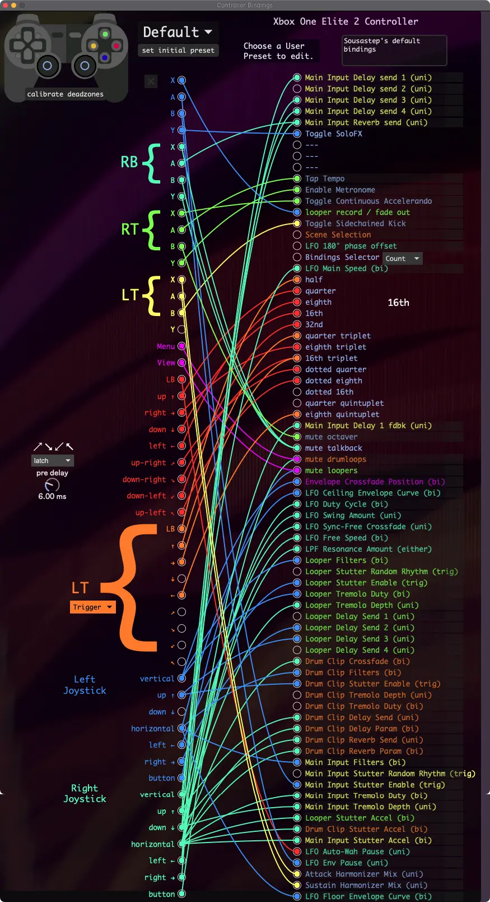

Controller Bindings
The controller bindings window allows gamepad inputs to be connected to effect parameters.
The bindings may be saved as presets. There are two factory preset slots, and five user preset slots. The factory presets can’t be modified, but they may be copied to user presets by first selecting the factory preset, then selecting the empty user preset and saving.
To create a binding, click one of the input’s circles and drag the connection to an output’s circle. To delete a binding, click on the connection and press the delete key. To save bindings, click “save / overwrite”.
The gamepad’s inputs are set up to be ergonomic for having the controller attached to the side of a tuba. The right bumper, right trigger, and left trigger all change which bindings the X A B Y buttons are assigned to. The left trigger also changes the dpad and LB’s assignments, to allow for a second bank of subdivisions.
Click the parameter labels to open their control logic settings.
Click to the right of the parameter labels to open the parameters window that they apply to.
{kind=link}
set initial preset
Set which bindings preset loads when SousaFX starts.
Latch / Delay
This determines how diagonals are triggered.
Latch: after triggering a diagonal, ↑ → ↓ ← can not trigger without first releasing the dpad
Delay: ↑ → ↓ ← can trigger after a diagonal without releasing the dpad
pre-delay
Before pressing a diagonal, this is the amount of time you have to hold ↑ → ↓ ← before they trigger.
post-delay
After releasing a diagonal, this is the amount of time you have to release ↑ → ↓ ← before they trigger. Only available in Delay mode.
cycle / count
This determines how the Controller Bindings Preset Selector functions. This is a global parameter that’s auto-saved.
Cycle: Single-click & double click will cycle forward & back through user presets.
Count: # of button presses in 1 second sets user preset #.
Hold the button to load the default preset.
top-right toggle
Enable to have the crosspatch object highlight conections that are in-use. This is useful for debugging, but uses a lot of CPU, so disable it while performing.
latch / trigger
This determines how the dpad and LB react to their modifier key, LT.
Hold: Toggling with LT doesn’t trigger dpad or LB. This is useful for being able to lock open sends.
Trigger: If dpad or LB is pressed, toggling with LT will trigger them. This is useful for switching between subdivisions.
This parameter is saved with the bindings’ user presets.
Presets 1 - 4
These four bindings can select each of the first 16 Main Presets. Clicking them selects a preset, and holding them for more than 1 second sets the preset bank. Holding preset 1 sets preset bank 1 (presets 1 - 4), holding preset 2 sets preset bank 2 (presets 5 - 8), holding Preset 3 sets preset bank 3 (presets 9 - 12), and holding preset 4 sets preset bank 4 (presets 13 - 16).